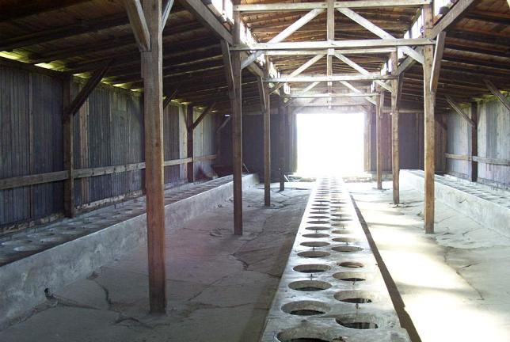
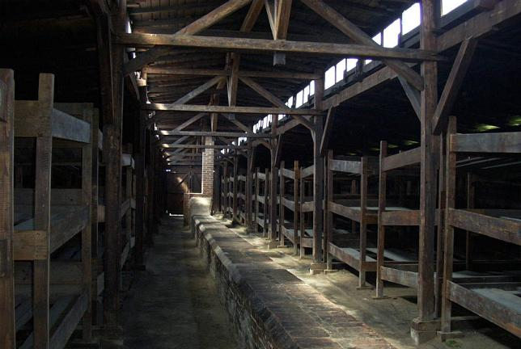

Life was atrocious here for the slave laborers. The top picture shows a bathroom facility consisting of rows of open holes, which were to be used by the prisoners in the morning, before leaving for work, and again in the evening upon returning from work. The bottom picture shows the dormitories, which consisted of rows of three slanted wooden bunks intended to be used by several prisoners at each level.


Back to Birkenau
Back to the trip homepage